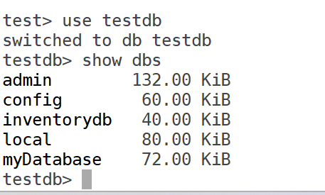
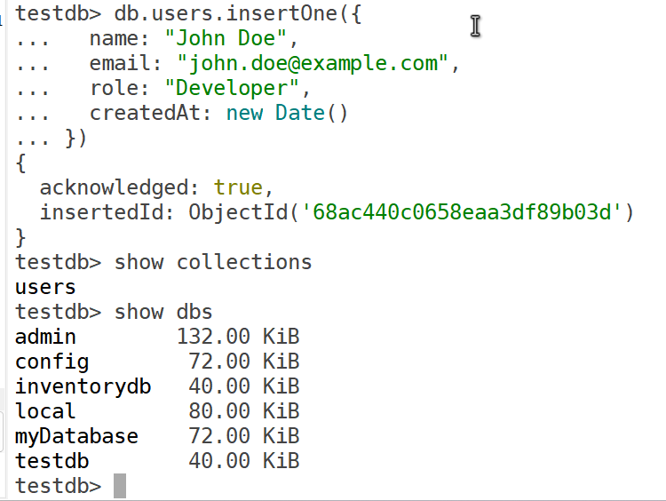
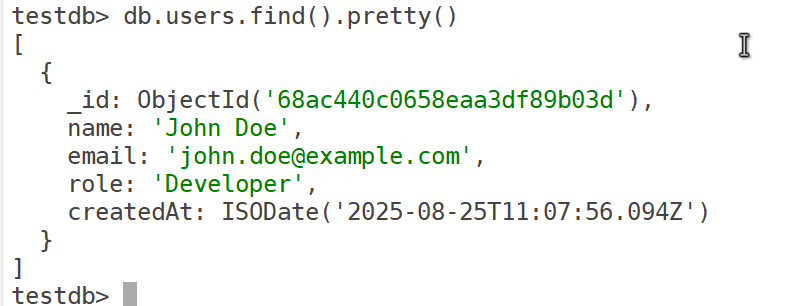
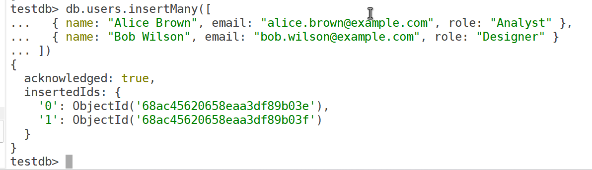
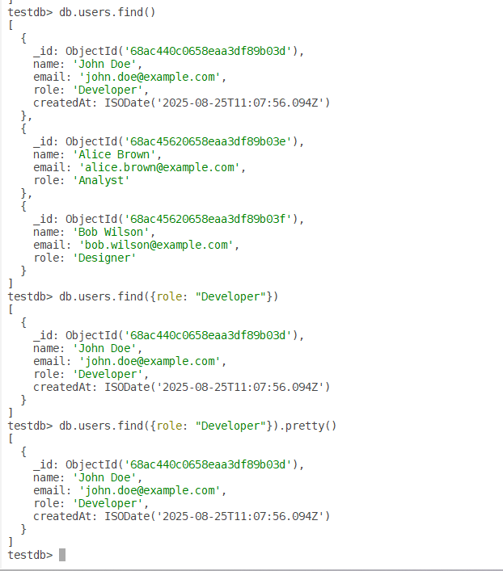

In earlier posts we installed MongoDB on Oracle Enterprise Linux 8 (OEL 8) and connected to it using the shell and GUI. Now we'll walk through creating a database in MongoDB 8.0 Community Edition on OEL 8, adding a collection, and performing basic operations in the mongosh shell. We'll authenticate as the admin user (mongoadmin) created earlier.
mongoadmin) with a secure password and the readWriteAnyDatabase role.sudo systemctl status mongod).mongosh installed (included with the mongodb-org package).bindIp set in /etc/mongod.conf (e.g. 0.0.0.0) and port 27017 open in the firewall.MongoDB creates databases implicitly — there is no CREATE DATABASE command. A database comes into existence the first time you store data in it.
Connect as the mongoadmin user:
mongosh -u mongoadmin -p --authenticationDatabase adminEnter the password when prompted. You'll see the admin> prompt.
Switch to a new database (e.g. testdb). MongoDB creates it when data is first inserted:
use testdb
show dbsThe use command switches to testdb. If it doesn't exist yet, it is only staged for creation.

testdb does not appear in show dbs yet. A database is only listed once it holds at least one collection with data.MongoDB stores data in collections (like tables in a relational database). Create a users collection simply by inserting a document into it:
db.users.insertOne({
name: "John Doe",
email: "john.doe@example.com",
role: "Developer",
createdAt: new Date()
})
testdb and the users collection both exist.| Part | Meaning |
|---|---|
db.users | The users collection in the current database (testdb). |
insertOne() | Adds a single document (a JSON-like object). |
| Result | The database and collection are created automatically on insertion. |
db.users.find().pretty()
_id automatically, and new Date() was stored as an ISODate.You can insert several documents at once:
db.users.insertMany([
{ name: "Alice Brown", email: "alice.brown@example.com", role: "Analyst" },
{ name: "Bob Wilson", email: "bob.wilson@example.com", role: "Designer" }
])
db.users.find() // all documents
db.users.find({ role: "Developer" }) // only developers
db.users.find({ role: "Developer" }).pretty()
db.users.updateOne(
{ email: "john.doe@example.com" }, // Query (filter)
{ $set: { role: "Senior Developer" } } // Update action
)updateOne() updates a single document that matches the filter:
db.users.deleteOne({ email: "john.doe@example.com" })| Part | Meaning |
|---|---|
db.users | The users collection in the current database. |
deleteOne() | Deletes a single document that matches the filter. If several match, only the first is deleted; if none match, nothing happens. |
{ email: "john.doe@example.com" } | The filter: delete the document whose email equals "john.doe@example.com". |
inventory, orders).db.users.createIndex({ email: 1 }).mongodump.bindIp to trusted IPs.bindIp: 0.0.0.0 makes MongoDB listen on every network interface. That's handy in a lab, but in production always pair it with authentication, a firewall and TLS — or bind only to specific addresses.testdb) and a collection (users) on OEL 8 using mongosh, then inserted, queried, updated and deleted documents. The shell is well suited to automation. For advanced topics like indexing or backups, see the MongoDB documentation.